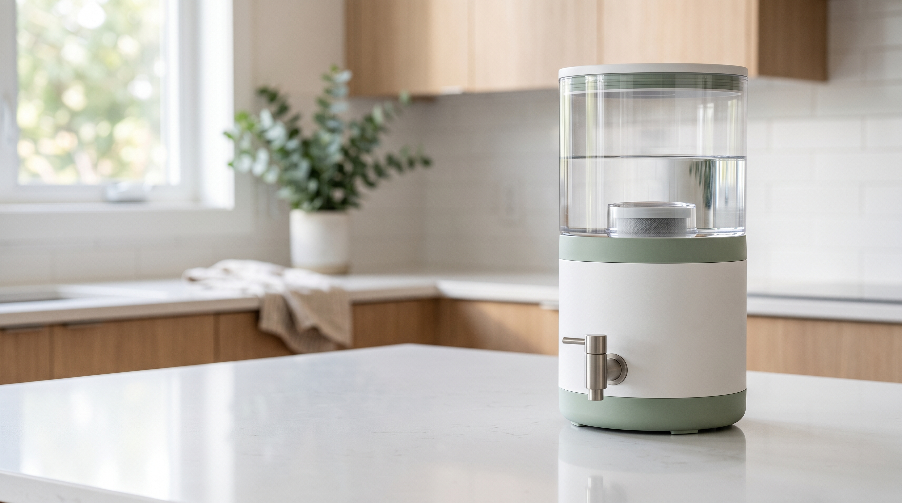

SIMPLE WATER FILTRATION
Make better water part of everyday life.
PUREFLOW is designed to make household water filtration simple, convenient, and easy to fit into your daily routine.

YOUR EVERYDAY WATER
Your water routine shouldn't be complicated.
Storing water, pouring it, and thinking about filtration can become another small task in an already busy day. PUREFLOW is designed to make that routine simpler and easier to manage.
THE PUREFLOW EXPERIENCE
Simple enough for everyday life.
PUREFLOW is built around a straightforward process, making filtration easy to understand and simple to fit into your household routine.
Pour
Add water to the filtration system.
Filter
Allow the filtration process to take place.
Enjoy
Pour the filtered water into your glass or container and continue with your day.
WHY PUREFLOW
Designed around everyday convenience.
Simple
A straightforward filtration experience without unnecessary complexity.
Convenient
Designed to fit naturally into your household water routine.
Home-Friendly
A clean, practical design created with everyday household use in mind.
BUILT FOR EVERYDAY USE
Simple design. Clear purpose.
PUREFLOW is designed around one simple idea: making household water filtration easier to understand and easier to fit into your routine.
PUREFLOW ONE
Make everyday filtration part of your routine.
A simple household filtration experience designed around convenience and everyday use.
Practice project price
GET PUREFLOW *This is a practice project. Product specifications, pricing and claims should be verified before commercial use.GET PUREFLOW
Interested in PUREFLOW?
Leave your details below and we'll contact you with more information about the PUREFLOW experience.
QUESTIONS
Questions you may have.
What is PUREFLOW?
PUREFLOW is a practice product concept for a household water filtration system designed around simplicity and everyday convenience.
How does PUREFLOW work?
The basic process is simple: add water, allow the filtration process to take place, and pour the filtered water into your preferred container.
Is the ₦35,000 price final?
No. ₦35,000 is currently a practice project price. Final commercial pricing would depend on the actual product, specifications, sourcing and operating costs.
How can I get more information?
Submit your details through the form and you can be contacted with further information about the PUREFLOW concept.
READY TO EXPLORE PUREFLOW?
Make simplicity part of your water routine.
Discover the PUREFLOW concept and see how a straightforward filtration experience can fit into everyday household life.
GET PUREFLOW